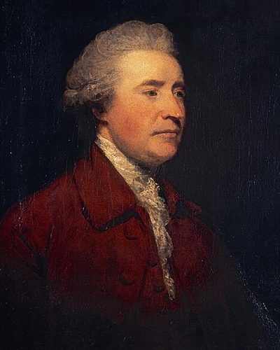

Ideologies / Conservative
What is Burkean Conservatism?
Burkean Conservatism is a political ideology in the Conservative family. It distrusts schemes that rebuild society from abstract principles, because inherited institutions hold more accumulated wisdom than any one generation can see. Change should be gradual and should repair, not replace. Attachment to one's own small corner of society, which Burke called the little platoon, is where loyalty to the wider nation begins.
Society is a partnership of the dead, the living and the unborn.
Defined from: Edmund Burke, Reflections on the Revolution in France (1790)
See how close you are to Burkean Conservatism Dare a friend to answer as one

.jpg){kind=link}
Where Burkean Conservatism stands on 13 axes
Each axis runs from 0 to 100. A score of 50 is the middle. On a classic compass it sits in the Libertarian Right quadrant.
| Axis | Position | Score | In words |
|---|---|---|---|
| EconomyMarket to Planned | 30 | Strongly Market | |
| OwnershipPrivate to Collective | 15 | Very strongly Private | |
| RightsLiberty to Security | 50 | Balanced | |
| GovernmentDemocracy to Autocracy | 50 | Balanced | |
| StructureDecentralised to Centralised | 40 | Leans Decentralised | |
| NationInternationalist to Nationalist | 65 | Leans Nationalist | |
| ImmigrationMulticulturalist to Assimilationist | 70 | Strongly Assimilationist | |
| ValuesProgressive to Traditional | 95 | Very strongly Traditional | |
| TechnologyAccelerationist to Precautionary | 65 | Leans Precautionary | |
| EnvironmentIndustrialist to Environmentalist | 50 | Balanced | |
| ReligionSecular to Religious | 80 | Strongly Religious | |
| MilitaryPacifist to Militarist | 55 | Balanced | |
| TradeFree Trade to Protectionist | 30 | Strongly Free Trade |
Ideologies closest to Burkean Conservatism
- Traditionalist Conservatism89% alike
- Straussianism87% alike
- One Nation Conservatism84% alike
- Compassionate Conservatism83% alike
- Catholic Social Teaching83% alike
Its opposite on this map is Posadism, at 29%.
Parties near Burkean Conservatism
- Anti Revolutionary PartyNetherlands. Our Programme (1879)86% alike
- Pakistan Tehreek e InsafPakistan. Shandaar Pakistan, Shandaar Mustaqbil (2024)83% alike
- Perikatan NasionalMalaysia. Prihatin, Bersih, Stabil (2022)82% alike
- Centre PartyGermany. The Soest Programme (1870)81% alike
Common questions
What is Burkean Conservatism?
Burkean Conservatism is a political ideology in the Conservative family. It distrusts schemes that rebuild society from abstract principles, because inherited institutions hold more accumulated wisdom than any one generation can see. Change should be gradual and should repair, not replace. Attachment to one's own small corner of society, which Burke called the little platoon, is where loyalty to the wider nation begins.
What does Burkean Conservatism believe?
In one line: Society is a partnership of the dead, the living and the unborn. Its strongest positions are Traditional, Private, Religious. It distrusts schemes that rebuild society from abstract principles, because inherited institutions hold more accumulated wisdom than any one generation can see. Change should be gradual and should repair, not replace. Attachment to one's own small corner of society, which Burke called the little platoon, is where loyalty to the wider nation begins.
Who founded Burkean Conservatism?
Burkean Conservatism is defined here from Reflections on the Revolution in France (1790) by Edmund Burke. The thinker most tied to it is Edmund Burke (1729 to 1797).
Is Burkean Conservatism left wing or right wing?
On a classic two axis compass Burkean Conservatism falls in the Libertarian Right quadrant, which means the economic right and the middle between libertarian and authoritarian. Left and right hide a lot, though, which is why EthosScales scores it on thirteen separate axes.
How is Burkean Conservatism different from Traditionalist Conservatism?
They are close, at a 89% match. The biggest gaps are on Structure, where Burkean Conservatism scores 40 and Traditionalist Conservatism scores 25, and Military, where Burkean Conservatism scores 55 and Traditionalist Conservatism scores 40. On each axis, 0 is one end and 100 is the other.
Think this is wrong? Suggest a correction. The scores are editorial estimates.